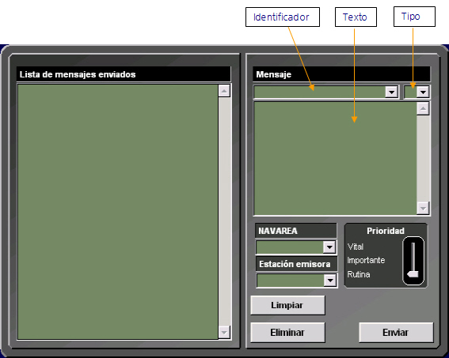

Radiodifusión Navtex
El instructor puede solicitar la emisión de mensajes Navtex desde cualquier estación costera con capacidad de transmitir mensajes Navtex incluida en el ejercicio.
Para la preparación de dichos mensajes el instructor debe utilizar la opción Archivos → Emisor Navtex del menú principal de la Pantalla de Control de Equipos. Mediante esta opción accede a la siguiente ventana:

La ventana de preparación de mensajes Navtex consta de dos zonas. La zona izquierda presenta la lista de mensajes enviados. La zona derecha presenta los campos necesarios para crear y programar la emisión de un nuevo mensaje.
Desde esta ventana el instructor puede realizar las siguientes acciones:
Una vez introducidos estos datos pulsar el botón Enviar si se quiere transmitir el mensaje. El sistema pedirá confirmación para proceder a la transmisión del mensaje. Se presentará un aviso de error si alguno de los datos anteriormente citados no está correctamente introducido.